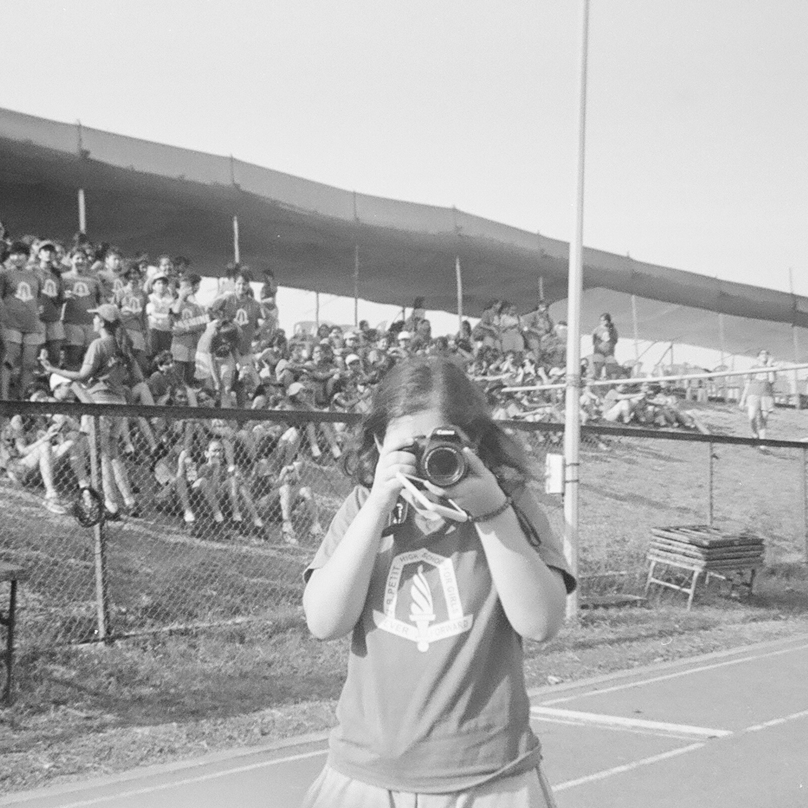

I am a Pure Mathematics major with minors in Data Science and Literatures of the World at UC San Diego, graduating in 2027. I thrive on exploring the interplay of logic, data, and human stories, combining my analytical mind with a creative outlook.
